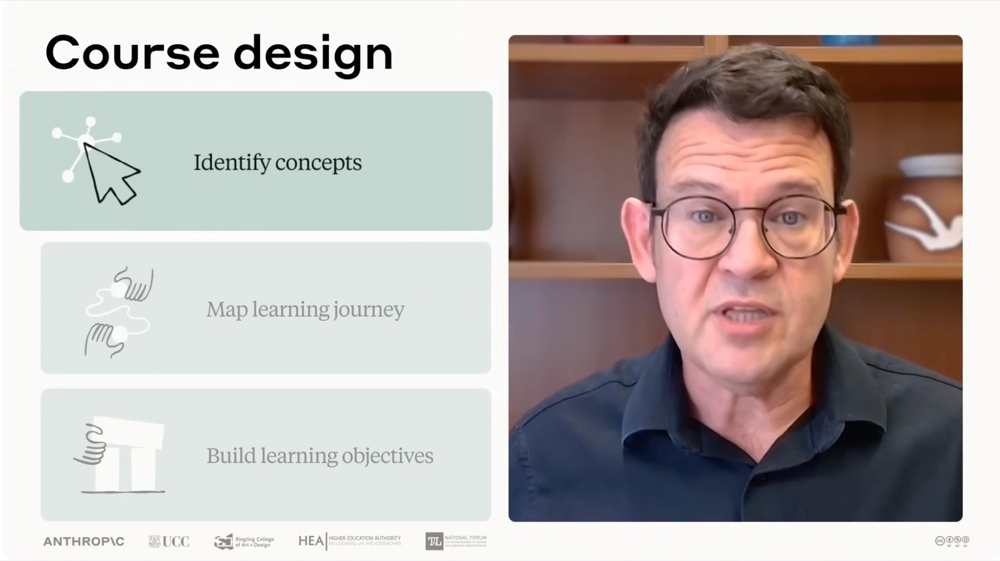

01
内容と概念を特定する
学生にとって不可欠な内容と概念を特定する。学生が誰なのか、何を学ぶ必要があるのか、彼らの成功のためにどう構造化するのかを考えながら。
Lesson 03 / AI Fluency for Educators（公式 Lesson 3 of 4）
9:25 · 全文書き起こし＋公式コース本文より
Joe Feller が、コース設計の3つの基本的な仕事——内容と概念の特定、学習の道筋を描くこと、学習目標の明文化——に 4D を当てていく回。鍵になるのは rich shared context（豊かな共有文脈）を築くこと。動画で実際に読み上げられているプロンプトも収録する。
この回で学べること — 公式ページ「In this lesson」より
「こんにちは、Joe Feller です。AI fluency がコースとレッスンの設計プロセスをどう変えうるかを探っていきましょう」——動画はそう始まる。
人間と AI のパートナーシップの鍵は、rich shared context（豊かな共有文脈）を築くこと。つまり、自分がそのコースやレッスンで何を達成しようとしているのかを、AI に正確に処理させることだと述べられる。
これが AI を、generic assistant（汎用のアシスタント）から、自分固有の教育文脈・自分の制約・自分の pedagogical vision（教育的ビジョン）に応える collaborator（協働者）へと変える。
なぜなら、教育者にとって AI の最も変革的な能力のひとつが、大きな文脈を保持したまま、相互に絡み合った意思決定を一緒に考え抜く手助けをしてくれることだから。これをうまくやったとき、AI は汎用アシスタントというより、自分の教え方をわかっている同僚に近くなる。
「AI のことは少しのあいだ忘れよう」。コースを設計するとき、私たちはたいてい3つの基本的な仕事に取り組んでいる、として次の3つが挙げられる。
01
学生にとって不可欠な内容と概念を特定する。学生が誰なのか、何を学ぶ必要があるのか、彼らの成功のためにどう構造化するのかを考えながら。
02
learning journey を描く。1回の授業でも学期全体でも、トピックがどう互いの上に積み上がって学生の学びを支えるかを決めていく。
03
具体的な学習目標を明文化する。その回のあと、あるいはコース修了時に、学生が何をできるようになるべきかを捉えるもの。

Course design：Identify concepts／Map learning journey／Build learning objectives。そのうえで、この回の問いが立てられる。AI との本物の協働関係を築くことは、この3つの仕事を「効率化する」だけでなく「変革する」ことができるのか。
内容と概念の特定で AI と働くとき、最初の一歩は賢い委任（delegation）の判断をすること。これは自分自身の専門分野の専門性と、自分が達成しようとしていることに依存する。
たとえば、高レベルのトピックはもう頭にあって、細部を埋める手助けだけが欲しい場合。あるいは、含める必要があるとわかっている具体的な概念はあるが、それをどう構成すべきかがはっきりしない場合。状況ごとに求められる協働の種類が違う。そして自分の具体的なニーズを理解することが決定的に重要になる。
さらに、「何を(what)」やっているかと同じくらい、「なぜ(why)」やっているのかを理解することも決定的だとされる。what と why の両方に答えられれば、誰がその仕事をすべきか——人間か、AI か、その両方か——そしてどうやるかについて、より良い委任の判断ができる。
次に来るのが記述（description）。AI を自分固有の問題空間へ本当に招き入れること。たとえば「統計学入門のトピックを挙げて」と聞く代わりに、こう試してみる——として、動画は実際にプロンプトを読み上げる。
I'm building a stats course for journalism students who need data literacy but often come to me anxious about math or skeptical that statistics matter in their careers. Help me think through how to identify concepts that will help address these student concerns while building their confidence.
データリテラシーを必要としているジャーナリズム専攻の学生向けに、統計学のコースをつくっています。ただ彼らはしばしば、数学に不安を抱えていたり、統計が自分のキャリアで重要だということに懐疑的だったりする状態で私のところに来ます。こうした学生の懸念に対処しつつ、彼らの自信を育てるのに役立つ概念を、どう特定すればよいか一緒に考えるのを手伝ってください。
動画は、後半の Help me think through… の部分を key call to action（重要な行動要請） を付け加える箇所として説明している。そして注目を促す——この記述は、汎用のコース計画ではなく、自分の実際の教育上の課題に根ざした「思考空間」をつくり出している。
AI がアイデアを提案し始めたら、そこが product discernment（成果物の評価） の出番。提案を自分自身の専門性に照らして評価する。「この概念は本当に、あの懐疑的なジャーナリズム専攻の学生たちの役に立つのか？」
だが、と動画は続ける。ただ受け入れたり却下したりするだけにしない。自分の文脈でなぜそれが機能するのか、あるいは機能しないのかを AI アシスタントに説明する。そうすることで、自分の専門性を使って、今後のより良い提案を形づくっていることになる。AI というパートナーに教えているのだ——それは自然にできて然るべきことだ、と。
そしてこのプロセス全体を通じて diligence（倫理的責任）を保つ。意思決定を外注しているのではない。最終的に学生の前に置かれるものへの責任を、自分が引き受けている。
さらに、AI との協働における主要な決定を記録し、自分の考えを学生と共有すべきだとされる。この透明性は、思慮深い専門家が AI にどう向き合うかを学生に示し、責任ある協働の手本になる。
思慮深い AI 協働から得られるものは時間の節約を超える。やりとりのたびに自分の理解が深まり、同時に「何が実際に学生のためになるか」への説明責任を保ち続けられる。
次はもうひとつのおなじみの難題——トピックのリストを、一貫した学習の道筋（learning journey）に変えること。「ここが、AI とのパートナーシップが本当に面白くなるところ」だと言われる。
前と同じく、明確な委任の思考から始める。問うべきは次の3つ。
次に良い記述を使って、その委任の判断を AI パートナーと共有する。ここでは product description と process description の両方に注意を払い、AI に何をしてほしいかと、どうしてほしいかの両方を説明する。
「この種の仕事には、もうひとつ面白い切り口がある」。コースの流れの案が頭にあるとき、AI に役割を切り替えるよう頼む。
Please act as one of my students. How would you react to this planned course at different points along the way? Where might you get confused? What background would you need at each stage? What support will you need for transitioning between topics?
私の学生の一人として振る舞ってください。この計画中のコースの、道中のさまざまな地点で、あなたならどう反応しますか。どこで混乱しそうですか。各段階でどんな前提知識が必要になりますか。トピックからトピックへ移るとき、どんな支援が必要になりますか。
この AI の対話的なロールプレイ能力は強力なのに、私たちはしばしば使い忘れる。いつでも使える学生フォーカスグループを持っているようなものだと強調される。
この協働において——実のところあらゆる AI 協働において——忘れてはいけないこと。評価力は問題を捕まえる助けになるだけでなく、予期しない洞察や良いアイデアを認識する助けにもなる。AI との本物の会話を絶えず目指し続ければ、本当に驚くような洞察や、自分の問題についての新しい考え方に出会える。
ここでの良い倫理的責任とは、品質保証であり、責任を引き受けることであり、透明であること。だが、ただの開示以上のものでもある。自分自身のプロセスに細かく注意を払うことが、次回の改善につながる。
AI と協働することで、学習目標を定めるという仕事に新しい息を吹き込める。
いま述べたプロセスを通じて AI と文脈を築いてきたなら——自分の知識、制約、ゴールを共有してきたなら——価値あるものができている。自分のコースと教育的アプローチについての共有理解だ。
もしそうでないなら、と動画は代替案を示す。コースのシラバスをアップロードし、自分のアプローチ、具体的な教育文脈、そのコースに関わるあらゆる制約を AI アシスタントに説明することから始めてみる。
その土台の上に、次の条件を満たす学習目標をつくれる。
4D に導かれたこれらの会話は、驚くほど生成的になりうる。プロセスが速いぶん、より多く実験でき、違うアプローチを試して、何が響くかを見られる。
さらに、学生が自分の学習目標を違う形で見られるように AI と一緒に働くこともできる。例として挙げられるのが、コースの成果を履歴書のスキルに対応づけること（mapping course outcomes to resume skills）——これは非常に動機づけになりうる。
教育にとってあまりに重要なので、と断って、倫理的責任がもう一度取り上げられる。倫理的責任は、自分のための記録以上のもの。自分の実践を学生や同僚と共有する機会でもある。
AI との働き方について透明であるとき、同時に4つのことが起きる。
学生は、専門家が実際にどう AI と関わるのかを見ることになる。
自分が編み出したやり方が、そのまま同僚と共有できる形になる。
置き換えではなく、高めるものとして。
それらが自分の仕事の中心にあり続けていることを、行動で見せられる。
「良い知らせ——この協働的アプローチは時間を節約できる。もっと良い知らせ——それは始まりにすぎない。」なぜなら、流暢な AI 協働の本当の力は次のところから来るから、と続く。
4D はチェックリストではない。それは、自分の教育学的・専門分野的な専門性が協働的な探索を導き、その結果として自分ひとりでも AI ひとりでも設計できなかったであろう、学生により良く役立つコースが生まれる——そのための本物の認知的パートナーシップ（genuine cognitive partnership）を築く枠組みである。
— 動画 8:06 付近
この文脈構築のアプローチは、あらゆる本格的な計画作業に効くとされる。
鍵は、大きな絵から始めて、細部へ降りていく間ずっと文脈を築き、そして保ち続けること。
そして次回予告。次のレッスンでは、こうして確立した文脈が、学習教材と評価（assessments）の作成をどう変えるかを探る。ただしその前に——提供されている演習で、自分でこのアプローチを実際に練習すること。
このワークフローで計画しているのはコースだが、より重要なのは、思考のパートナーシップと、教育実践全体を高めるスキルセットを築いていること。
ここまでのセクションは動画のトランスクリプトに基づく。以下は公式 Academy のレッスンページにある Key takeaways（重要なポイント）の訳。
あなたのアプローチ、ビジョン、ニーズを理解するパートナーへ。
委任力で何を誰がやるかを決め、記述力で問題空間へ招き入れ、評価力で自分の専門性に照らし、倫理的責任で最終成果への責任を保つ。
求めているのは、より速い計画立案ではなく、より良い教育と学習。
AI がプロセスを導くのではない。
ここから先は動画ではなく、Anthropic 公式 Academy のこのレッスンの Exercises セクションが出典。
推定時間：50分。レッスン01 で作った Teaching Context document（教育コンテキストドキュメント）を最初のプロンプトの一部として再利用し、コースの部分的／全体的な（再）設計プロセスを通しでやる。このコースの動画トランスクリプトを AI パートナーに共有してもよい。
AI を始める前に、自分自身のために次を明確にする。
会話を始める。
記述を豊かにする。
パートナーシップを立ち上げる。
関連するコース要素を通しでやる。全体を通じて評価力を働かせ、継続的な会話を通じて自分の記述を練り直す。
内容の特定。
学習の道筋のマッピング。
学習目標。
公式コースのレッスン1の演習「Building a shared teaching vision」で、AI との会話を通じてつくる再利用可能な教育コンテキストドキュメントのこと。自分の教育哲学、制約、学生像、好む教育方法などをまとめたもので、今後の AI との協働の冒頭で共有して共通理解を確立するために使う。本サイトでは 01 教育者のための AI Fluency 入門 に収録している。
公式ページにはこの回の振り返り設問が無い。以下は動画と公式演習の Stage 4 から、本サイトが起こしたもの。
却下の理由を言葉にできたとき、それは自分の教育的判断そのものになっている。
「いつでも使える学生フォーカスグループ」は、自分の何を見えるようにしたか。
共有できない部分があるとしたら、それはなぜか。
公式ページの What's next はこう予告する——次のレッスンでは AI とともに学習教材と課題を作成することを扱う。ここまでに築いた文脈が、講義スライドから評価まで、教材づくりをより一貫性のある効果的なものにすることを発見する。同時に、学生もまた AI を使える状況で、学術的誠実性をどう保つかという課題にも取り組む。
この予告にあたるのが公式 Lesson 4「Applying AI Fluency to learning materials and assignments」で、本サイトでは 04 学習教材と課題への AI Fluency の適用 として収録している。動画の 8:45 も次回予告として「確立した文脈が学習教材と評価の作成をどう変えるか」を扱うと述べている。
YouTube の自動生成字幕から取得したもの。認識ミス（highle、court content、role playing の区切りなど）もそのまま残してある。日本語本文側では正しい語に直している。
Hello, I'm Joe Feller. Let's explore how AI fluency can transform your course and lesson design process. The key to human AI partnership is building rich shared context. Helping AI process exactly what you're trying to achieve in your course
or lesson. This turns AI from a generic assistant into a collaborator who responds to your specific teaching context, your constraints, and your pedagogical vision. That's because one of AI's most transformative capabilities for educators is holding large contexts
in mind while helping us think through interconnected decisions. When you do this well, AI becomes less like a generic assistant and more like a colleague who gets your teaching approach. Let's forget about AI for a moment. When designing a course, we
generally engage in three fundamental pieces of work. We identify the content and concepts that are essential for our students, considering who they are, what they need to learn, and how to structure it for their success. We also map out the learning journey, deciding how
topics will build on each other to support student learning over the course of a single session or the whole term. and we articulate specific learning objectives that capture what students should be able to do after a given session or by the end of the course.
Now, let's explore how building a genuine collaborative partnership with AI can transform, not just streamline, these three tasks when working with AI on identifying court content and concepts. The first step is to make
smart delegation decisions. This depends on your own subject matter expertise and what you're trying to accomplish. For example, maybe you already have highle topics in mind and just want help filling out some of the details. Or
perhaps you have specific concepts that you know you'll need to include, but you aren't quite sure how to organize them. Each situation calls for different kinds of collaboration, and understanding your specific needs is critical. It's also critical to understand why you are doing
it. Answering what and why means that we can make better delegation decisions about who should do the work, human, AI or both, and how. Next comes description. Really inviting AI into
your specific problem space. For example, instead of asking for introductory statistics topics, try something like, "I'm building a stats course for journalism students who need data literacy but often come to me anxious about math or skeptical that
statistics matter in their careers. Then add a key call to action. Help me think through how to identify concepts that will help address these student concerns while building their confidence." Notice how this description creates a thinking space rooted in your actual pedagogical
challenge, not generic course planning. As AI starts suggesting ideas, that's where product discernment comes in to evaluate those suggestions against your own expertise. Does this concept actually help those skeptical journalism students? But don't just accept or
reject. Explain to the AI assistant why something works or doesn't in your context. By doing this, you're using your expertise to shape better future suggestions. You're teaching your AI partner something that should come
naturally. And throughout this process, maintain diligence. You're not outsourcing decisions. You're taking responsibility for what ends up in front of your students. And you should document key decisions in your AI collaboration and share your thinking
with your students. This transparency shows our students how thoughtful professionals approach AI and it models responsible collaboration. What you get from thoughtful AI collaboration goes beyond saving time. Each exchange
deepens our understanding while maintaining accountability for what actually serves our students. Now for another familiar challenge, turning a list of topics into a coherent learning journey. This is where AI partnership really gets interesting. Like before,
start with clear delegation thinking. Ask, "What are my goals? What kinds of work needs to be done? What aspects of that work can best be automated or augmented with AI?" Then use good description to share these delegation decisions with your AI partner. Pay
attention to both product and process description and explain what you would like AI to do and also how. Here's another interesting angle to this type of work. When you have a possible course flow in mind, ask the AI to switch roles. Say something like, "Please act
as one of my students. How would you react to this planned course at different points along the way? Where might you get confused? What background would you need at each stage? What support will you need for transitioning between topics?" This interactive role
playing capability of AI is powerful, but we often forget to use it. It's like having a student focus group available at any time. In this collaboration, indeed in every AI collaboration, remember that discernment helps us to catch problems, but also to recognize
unexpected insights and good ideas. If we continually strive for real conversations with AI, we'll encounter some really surprising insights and new ways of thinking about our problems. Good diligence here means quality
assurance, taking responsibility, and being transparent. But it's more than just disclosure. By paying close attention to our own process, it helps us improve the next time. Collaborating with AI lets us breathe new life into defining learning
objectives. If you've been building context with AI through the process we just discussed, sharing your knowledge, constraints, and goals, then you've created something valuable. a shared understanding of your course and pedagogical approach. If not, try
uploading a course syllabus and describing to your AI assistant your approach, specific teaching context, and any constraints relevant to the course. Now, you can use that foundation to craft learning objectives that are accurate, meaningful, motivating to your
students, true to your teaching philosophy, and aligned with your institution's requirements. These conversations guided by the 4Ds can be surprisingly generative. Because the process is faster, you can experiment more, try different approaches, and see
what resonates. You can also work with AI to help students see their learning objectives differently, like mapping course outcomes to resume skills, which can be very motivating. Let's revisit diligence one more time because it is so important to education. Diligence is
more than just documentation for your own use. It's an opportunity to share your practice with your students and peers. When you're transparent about how you work with AI, you do several things at once. You model responsible AI collaboration. You share pedagogical
innovations. And you demonstrate how AI can enhance your learning expertise, and you're showing that human judgment, values, and relationships with your students remain at the center of your work. Good news, this collaborative approach can save time. Better news,
that's just the beginning. Because the real power of fluent AI collaboration comes from surfacing hidden assumptions and blind spots in our own thinking. It comes from discovering creative connections between concepts that we otherwise might have missed and
maintaining coherence while exploring new ideas or building personal competencies that get stronger with practice. The four Ds aren't a checklist. They're a framework for building genuine cognitive partnership where your
pedagogical and subject matter expertise guides collaborative exploration resulting in courses that serve students better than either you or the AI could have designed alone. This context building approach works for any
substantial planning task, including creating new courses from scratch, updating existing courses, planning curriculum sequences, and developing learning pathways. The key is starting with the big picture, building and
maintaining context as you work down through the details. In our next lesson, we'll explore how this established context can transform the creation of learning materials and assessments. But first, practice the approach yourself with the exercises we've provided. And
remember, yes, with this workflow, you're planning a course, but more importantly, you're building a thinking partnership and a set of skills that will enhance your entire pedagogical practice.